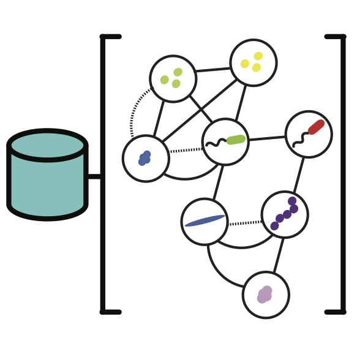
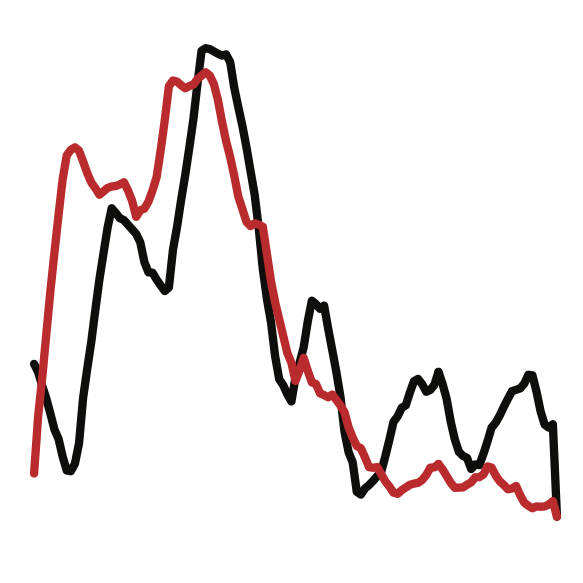
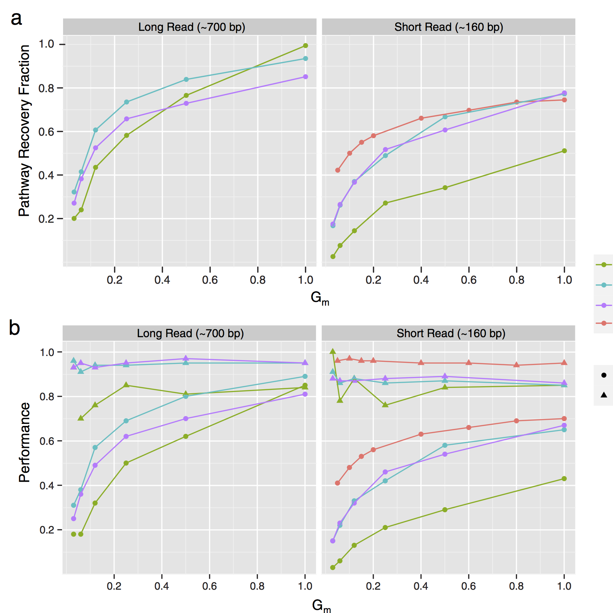
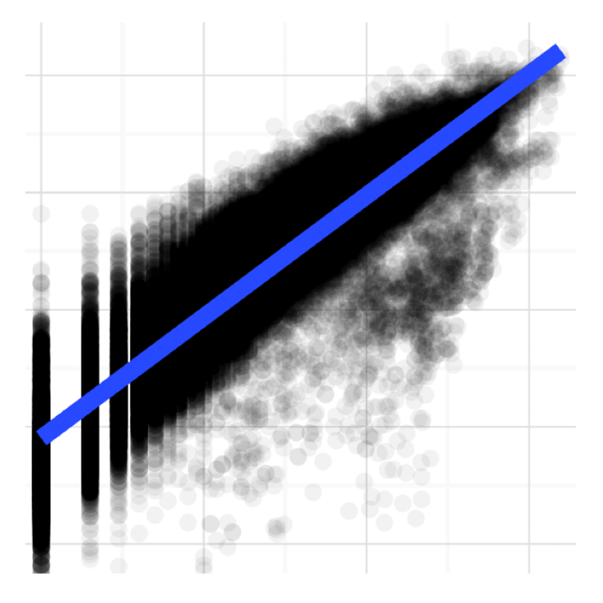
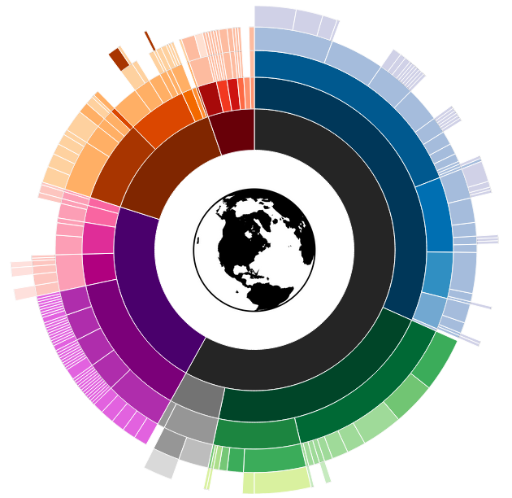

Niels Hanson
Data scientist and software developer.
Portfolio
This page highlights a selection of my software, analyses, and visualization projects.
Software
Here I've highlighted some of the software projects I have been involved with.
MetaPathways
A high-performance pipeline for the systematic processing and analysis of next-generation environmental datasets, allowing the systematic preprocessing, gene prediction, annotation, and comparison of thousands of metagenomic samples. Published in BMC Bioinformatics.
Master-worker
Designed a distributed Master-worker algorithm for the scheduling of compute tasks to multilple HPC computational grids. Implemented as a feature of the MetaPathways v2.0 to process computationally intensive homology-search tasks. Published in IEEE CIBCB 2014.
FastLSA
FastLSA is a correlation detection method specializing the detection of partial, leading, or lagging correlation, particilar within time-series. P-values are calculated using a closed-form approximation, implemented in C, and paralleized with p-threads; hundreds of times faster than previous implementations. Published in BMC Genomics.
Analytics
I've been involved in a number of analysis of unstructured datasets from beginning to end. Applying a number of statistical and machine learning models and the ggplot2 visualization framework. I am an avid user of Knitr, RMarkdown, and RStudio for reproducible data analysis.
Single Cell Genomes
Analysis combined three taxonomic identification methods, MEGAN, ML-TreeMap, and EggNOG, to compare single-cell samples from three different environments, separated using microfluidic device. Techniques used included Gaussing Kernel Density Estimation and Hierarchical Clustering. Results visualized in R using the lattice package. Results published in PNAS.
Metabolic Pathways
Utilized MetaPathways to re-evaluate Hawaii Ocean-time series samples, providing guidelines for the analysis of predicted metabolic pathways from environmental samples. R and ggplot2 were used to compare activity of metabolic pathways biogeochemical variables like ocean depth and salinity. Developed a novel weighted distance to cacluate taxonomic variance within pathways. Published in BMC Genomics.
Read Mapping
An improvement in MetaPathways v2.5 is the ability to map reads to assembled sequences to estimate abundance. In this analysis we evaluate the variance of read-mapping against simple gene counting. Fitting a linear model mapped vs gene counts in metagenomic samples from the Pacific Ocean Line-P transact showed variance is being corrected for in the mapped case. Published in Oxford Bioinformatics
Visualization
I also develop interactive visualizations using the d3.js JavaScript library. bl.ocks.org/nielshanson
Sunburst Plot
Radial tree-map or Sunburst plot of global metagenomes classified by sampling category.